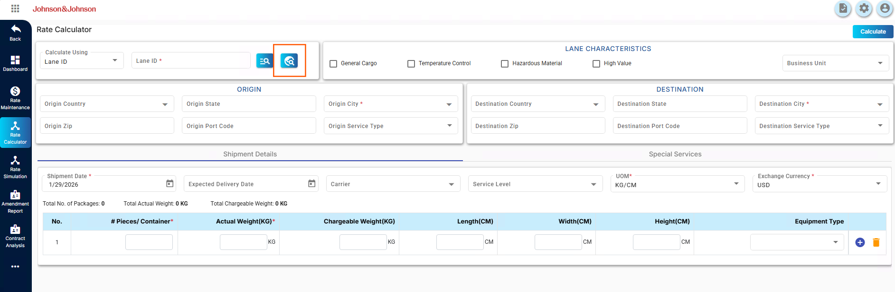
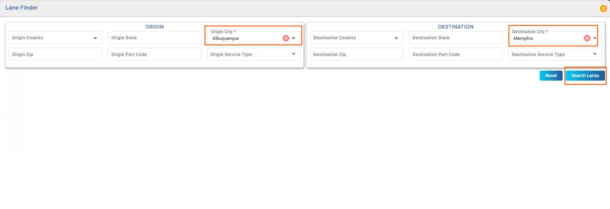
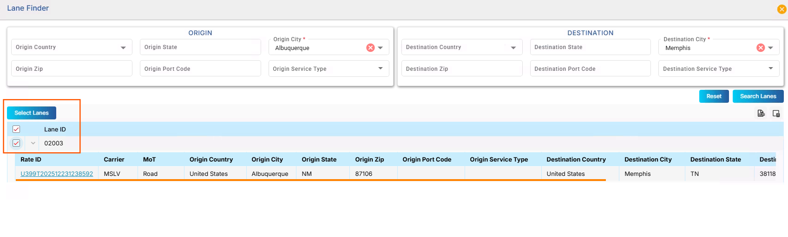
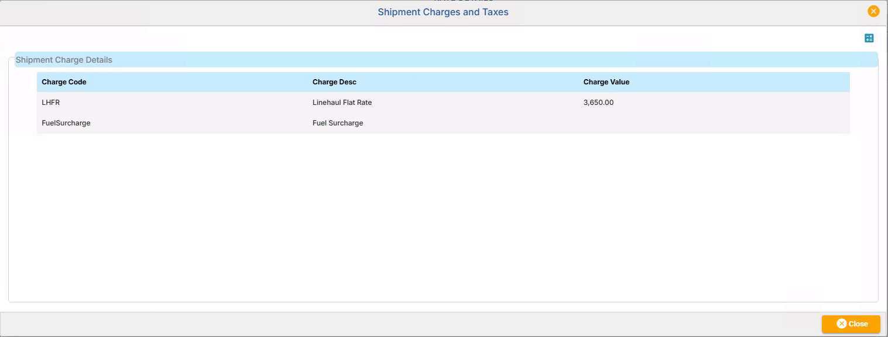
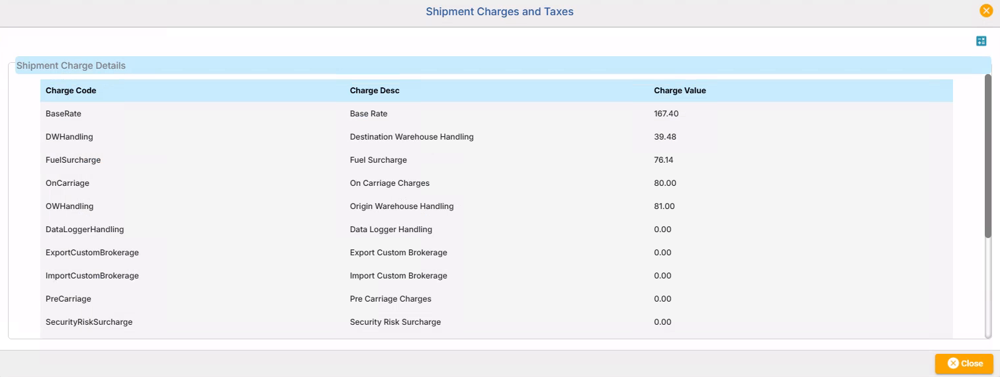
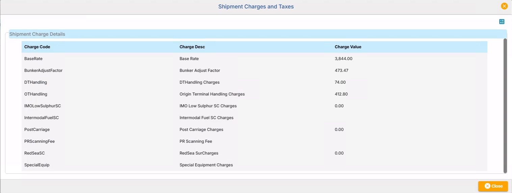
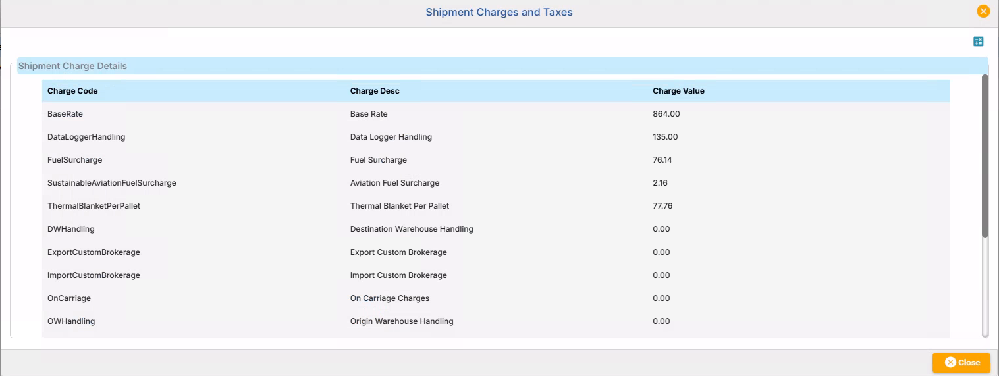

Rate Calculator
Overview
The Rate Calculator within Ratecube is a powerful tool designed to calculate shipment costs based on input demographics and shipment details. By using this tool, users can generate precise cost calculations, view detailed charge breakdowns, and identify all relevant shipment parameters for different service levels and modes of transport.

Rate Calculator Input Fields
The input fields on the Rate Calculator screen are essential for calculating shipment costs accurately. Each section has specific fields that require completion to ensure valid and meaningful results.
Calculate Using - Calculation Method Selection
The Calculate Using dropdown allows you to choose the primary input mode for the Rate Calculator. This determines how you will search for and load lane information.
- Lane ID / Rate ID Mode: Use this mode when you have a specific Lane ID or Rate ID. Once entered and the Search button is clicked, the system automatically retrieves and prepopulates the following fields:
- Origin and destination details (city, state, country, postal code)
- Carrier information (carrier, service level)
- Manual Mode: Use this mode to search for lanes manually using Origin and Destination details (city, state, country, postal code). This option is useful when you don't have a specific Lane ID or Rate ID but know your shipment's origin and destination.
Lane Identification
Select the calculation method via the Calculate Using dropdown, then enter the appropriate identifier:
- Lane ID: A predefined shipment lane identifier (also called Item ID in Rate Maintenance). Enter the Lane ID in the text field and click Search to retrieve lane information.
- Rate ID: A unique identifier for a specific rate record (also called Unique ID in Rate Maintenance). Enter the Rate ID and click Search.
- Manual: Manually enter Origin and Destination city details to search and calculate rates.
Note: Both Lane ID and Rate ID must reference active records in Rate Maintenance for the calculation to succeed.
Search Buttons
-
Click after entering a Lane ID or Rate ID to automatically retrieve and populate the Origin, Destination, and Carrier information. The system will perform validation and load all related details.
Lane Finder
-
Click to open a popup dialog that helps you search for available lanes. On the basis of Origin and Destination details, you can search for existing lanes with given Origin and Destination information. This is helpful when you don't know the specific Lane ID.
- Click Lane Finder button to open the dialog 
- Select Origin City (required - marked with *)
- Select Destination City (required - marked with *) from the filtered options
- Optionally add Origin State, Zip, or Destination State, Zip to refine results
- Click Search Lanes to view matching lanes 
- Check the checkbox next to your desired lane and click Select Lanes to load it 
- Once you select a lane from the Lane Finder results, the system automatically loads it into your Rate Calculator screen
Lane Finder Workflow

Tip: The grid displays Lane ID, Rate ID, Carrier, Mode of Transport, and location details for each result. You can export results to Excel or see detailed information by expanding rows.
Lane Characteristics
This section allows you to specify shipment characteristics through checkbox selections and a Business Unit selector:
- General Cargo - Checkbox to indicate a general cargo shipment (standard shipments with no special requirements)
- Temperature Control - Checkbox to indicate a temperature-controlled shipment
- Hazardous Material - Checkbox to indicate a hazardous material shipment
- High Value - Checkbox to indicate a high-value cargo shipment
- Business Unit: Dropdown to select the applicable business unit (e.g., Advanced Therapy Lane, Clinical Lane). This field may be required depending on your organization's configuration.
Origin Information
Define the shipment's starting point. These fields are automatically populated when you enter a Lane ID or Rate ID and click Search:
- Origin Country: Auto-complete field to select the origin country
- Origin State: Text field for the origin state or province
- Origin City (Mandatory): Auto-complete field for the origin city - this is a required field
- Origin Zip: Text field for origin postal/ZIP code
- Origin Port Code: Text field for the origin port code (applicable for ocean/port shipments)
- Origin Service Type: Dropdown to select the origin service type
Note: These fields are only required if you do not use Lane ID or Rate ID. The selected Origin must have an active Rate Card record in Rate Maintenance for the calculation to succeed.
Destination Information
Define the shipment's endpoint. These fields are automatically populated when you enter a Lane ID or Rate ID and click Search:
- Destination Country: Auto-complete field to select the destination country
- Destination State: Text field for the destination state or province
- Destination City (Mandatory): Auto-complete field for the destination city - this is a required field
- Destination Zip: Text field for destination postal/ZIP code
- Destination Port Code: Text field for the destination port code (applicable for ocean/port shipments)
- Destination Service Type: Dropdown to select the destination service type
Note: These fields are only required if you do not use Lane ID or Rate ID. The selected Destination must have an active Rate Card record in Rate Maintenance for the calculation to succeed.
Shipment Details and Pricing Context
Shipment Date and Delivery Information
- Shipment Date (Mandatory): Date picker for the planned shipment date. This date must fall between the Valid From and Valid To dates of the Rate Card selected in Rate Maintenance.
- Expected Delivery Date (Optional): Optional date picker for the expected delivery date
Carrier and Service Details
- Carrier: Auto-complete field to select the carrier
- Service Level: Auto-complete field to select the service level
Units and Currency
- UOM (Unit of Measurement) (Mandatory): Dropdown to select the unit of measure for weight/dimensions:
- KG/CM (Kilogram/Centimeter) - Metric units
- LB/in (Pound/Inch) - Imperial units
- Exchange Currency (Mandatory): Dropdown to select the currency used for rate calculation (e.g., USD, EUR, CAD)
Package and Weight Breakdown
Header totals display the aggregate of the package grid entries. These fields are read-only and auto-populate as you enter package details.
Output Overview
Once all required fields are entered and the Search button is clicked, the Rate Calculator generates detailed output for the shipment in the RATE DETAILS section. The output includes:
- Rate Details: Displays calculated charges organized by Carrier Name, Service Code, Lane ID, Mode of Transport, Total Charges, and Currency.
- Total Cost: The sum of all applicable charges for the shipment (displayed as a clickable link).
- Breakdown by Template: Click on Total Charges to view itemized charges. Charge codes are grouped based on predefined templates to ensure clarity.
- Result Type Options: View results as Grid (table format) or Carrier Wise (grouped by carrier).
Region-Specific Details
North America (Road NA)
The output is simplified and focuses primarily on:
- Base Rate: The core cost of transporting goods within the region.
- Fuel Surcharge: Adjusts costs based on fluctuating fuel prices.
There are no subcategories (e.g., FTL or LTL) within Road NA, making it straightforward and ideal for standard road transport within North America.
Europe, Middle East, and Africa (Road EMEA)
The output for Road EMEA is divided into three subcategories, depending on the type of shipment. Each has unique templates for calculating charges:
-
Full Truckload (FTL): Includes the Base Rate, surcharges for specialized equipment (e.g., double-deck trucks), and costs for extra days or weekend handling.
- Designed for large shipments requiring the full capacity of a truck.
-
Less Than Truckload (LTL): Focuses on the Base Rate and surcharges for dangerous goods or additional handling requirements.
- Ideal for smaller shipments sharing truck space with other goods.
-
Premium Post Merge Express (PMPME): Tailored for expedited and high-priority shipments.
- Includes Base Rate and additional surcharges for hazardous goods and specialized handling.
Air Shipments
Air shipment outputs are focused on speed and premium services. The breakdown typically includes:
- Base Rate: Calculated based on weight, volume, and distance.
- Fuel Surcharge: Reflecting the cost of jet fuel adjustments.
- Security Risk Surcharge: Applied to sensitive or high-risk cargo.
Transit times are shorter, with detailed timelines for delivery.
Ocean Shipments
Outputs for ocean shipments include:
- Base Rate: Adjusted for long-distance transport and high-volume goods.
- Port Handling Charges: Costs associated with loading/unloading at origin and destination ports.
- Dangerous Goods Surcharge: Additional costs for hazardous materials.
Delivery dates and transit days are typically longer, reflecting maritime schedules.
Charge Breakdown
The Shipment Charges and Taxes section provides a comprehensive breakdown of individual charges applied to the shipment. Each charge is displayed with a code, description, and associated cost.
- Base Rate: The primary cost of the shipment.
- Fuel Surcharge: Additional costs reflecting fluctuating fuel prices.
- Hazardous Material Handling: Charges for shipments containing dangerous goods.
- Extra Days Cost: Costs incurred for extended delivery timelines or weekend handling.
- Security Risk Surcharge: Fees associated with high-security or sensitive shipments.
Additional charges may include: Pre Carriage, On Carriage, Origin/Destination Warehouse Handling, Export/Import Custom Brokerage, ULD-related charges, Data Logger Handling, and other service-specific charges based on the selected rate and services. Charges with a value of 0.00 indicate that the charge does not apply to the shipment.
Additional Notes and Features
- Special Services: Select from optional services in the Special Services tab. Each selected service adds specific charges to the final calculation. Service availability depends on the MoT, carrier, and route selected.
- Data Export: Results can be exported to Excel using the Export button for analysis or record-keeping.
- Error Handling: Ensure all mandatory fields marked with * are completed. At least one of Total Chargeable Weight or complete dimension data (Length, Width, Height) is required. Lane ID/Rate ID must reference active records in Rate Maintenance. Shipment Date must fall within the Valid From and Valid To dates of the selected Rate Card.
Frequently Asked Questions
What is the difference between Lane ID and Rate ID?
Lane ID (called Item ID in Rate Maintenance) corresponds to predefined shipment lanes. Rate ID (called Unique ID in Rate Maintenance) is the unique identifier for a specific rate record. Both must reference active records in Rate Maintenance.
Can I calculate costs for shipments containing hazardous materials?
Yes, ensure the "Dangerous Goods" field is populated under Cargo Information.
What does "Chargeable Weight" mean?
It is the calculated weight used to determine shipping costs, derived from both the actual weight and volume.
Do I need to enter Origin and Destination if I provide Lane ID or Rate ID?
No. When you enter Lane ID or Rate ID and click Go, the system automatically populates Origin and Destination details. These fields are only required if you do not use Lane ID or Rate ID.
What date should I enter for Shipment Date?
The Shipment Date must fall between the Valid From and Valid To dates of the Rate Card selected in Rate Maintenance. The system will validate this and prevent calculations for dates outside this range.
What are Extra Lease Days, Data Logger Count, Container Count, and UN Number Count?
These are optional parameters that apply specific charges if required:
- Extra Lease Days: Number of additional days for equipment lease.
- Data Logger Count: Number of temperature/humidity monitoring devices.
- Container Count: Total number of containers in shipment.
- UN Number Count: Number of UN-classified hazardous items for compliance tracking.
What does the Special Services tab do?
The Special Services tab allows you to select optional add-on services (40+) for your shipment. Each selected service applies specific surcharges to the final cost calculation. Services available depend on your MoT and route selected.